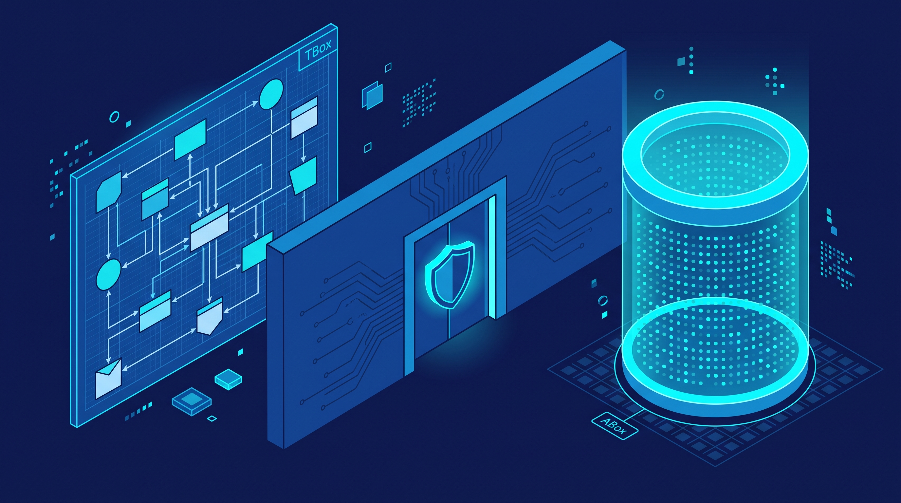
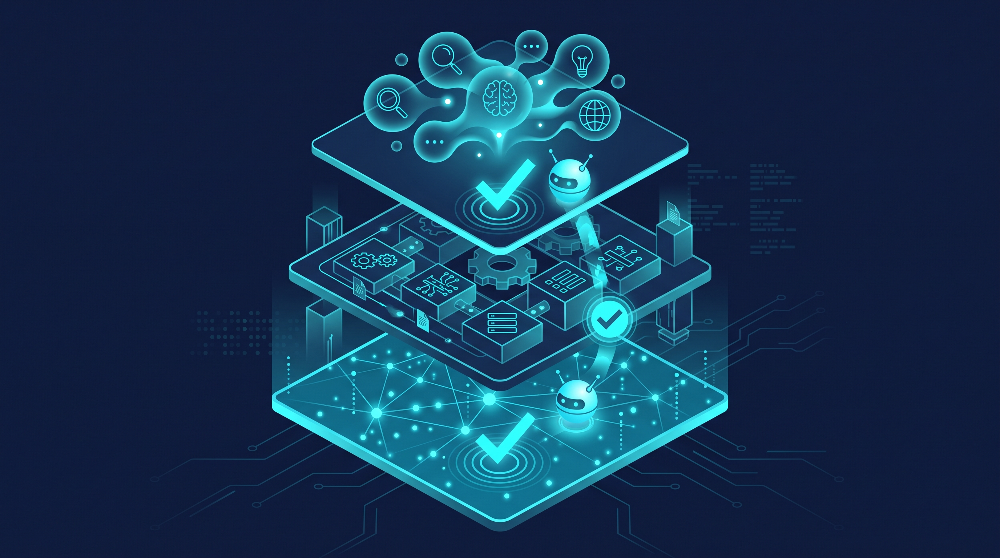
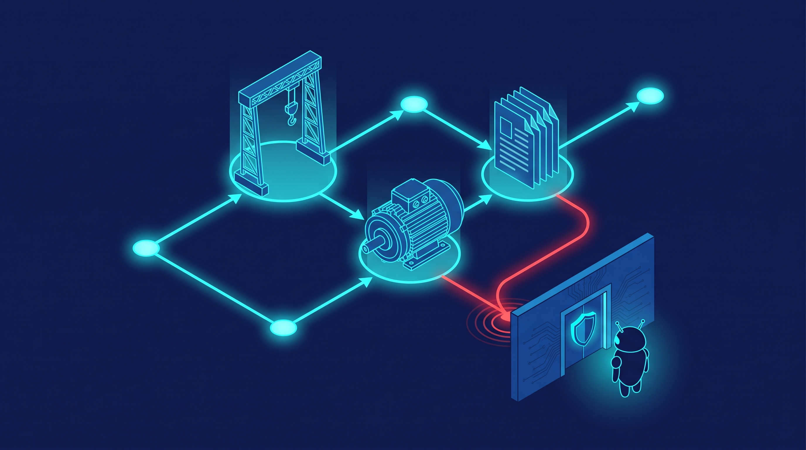

An Ontology Is Not a Graph Database: What Industrial AI Actually Needs
There is a mistake repeating itself across plant floors right now. An engineering team buys a graph database, loads in the asset list, and declares that its industrial ontology is done. A few months later the AI agents built on top of it are misreading machine tags, inventing impossible process states, and hallucinating confidently in front of operators. The database worked exactly as sold. The ontology never existed.
As large language models and AI agents move onto the plant floor, this confusion has become the single most expensive misunderstanding in industrial AI. Getting the distinction right is the difference between an agent that optimizes your process and an agent that invents one.
An ontology is the schema, not the store
A digital ontology is a semantic data model that formalizes the entities in a physical operating environment — machines, operators, materials, processes — along with their semantic relationships and constraints, in machine-readable form. It fills the semantic gap between raw data and intelligent agents, acting as a deterministic verification layer that blocks AI hallucination at the source.
The crucial technical point: an ontology is not the data. It is the top-level schema — the TBox (terminology box) that defines classes, relations, and physical constraints — strictly separated from the actual store where data instances live, the ABox (assertion box). A graph database is a container for instances. An ontology is the set of rules that makes those instances mean something. Confusing the two is, as XMPro's editorial on the subject puts it, the most common grave mistake on plant floors.

No single database can hold all of an enterprise's industrial data anyway. A real production ontology is a "virtual knowledge graph" that links time-series historians, ERP, engineering documents, and sensor streams without replicating them — plus a "semantic gatekeeper" that blocks AI agents from attempting invalid data operations. Unless ontology is treated as a governance framework rather than a store, industrial AI projects cannot escape structural failure.
The three layers industrial AI is standardizing on
Without ontology layered over raw time-series data and fragmented ERP/MES records, AI agents misread machine-tag context and hallucinate badly — a failure mode documented in HiveMQ's technical whitepaper on ontology-driven industrial AI agents. The industry response is converging on a three-layer structure: the semantic model (concept definitions), the domain ontology (equipment and engineering rules), and the knowledge graph (real-time instance mapping).

In this architecture, agents traverse the knowledge graph at inference time and validate every step against the ontology schema, enabling error-free process optimization and anomaly diagnosis. The schema is what keeps an agent from concluding that a temperature setpoint belongs to a conveyor belt or that a maintenance window applies to a running furnace.
What it looks like in a shipping product
This is not an academic abstraction. Tatsoft's FrameworX 10.1.5 release moved away from flat-tag data structures toward an ISA-88, ISA-95, and OPC UA standards-based industrial ontology layer with a live knowledge graph inside the platform. It ships 18 native Model Context Protocol (MCP) tools that connect directly to large models like Anthropic's Claude.
The result: engineers auto-generate control logic and displays from natural language, and operators semantically query real-time process data. The ontology layer is doing the quiet work underneath — giving the model's words a deterministic anchor in the plant's engineering reality.
The standards layer is catching up
NIST and the EDM Council are accelerating the Industrial Ontology Foundry (IOF) program for manufacturing data interoperability. Siemens, meanwhile, has demonstrated a multilingual multi-ontology knowledge-graph workbench — documented at Siemens' industrial ontology page — that maps manufacturing (ISA-95), process automation (OPC UA), buildings (Brick), and power systems (IEC 61850) into one semantic frame.
That work dissolves the semantic barriers between heterogeneous industrial standards. A pump described in OPC UA terms and a building system described in Brick terms can finally be reasoned about by the same agent, because both sit under shared ontological definitions rather than inside competing vendor databases.
It even works on unstructured engineering knowledge
The value extends beyond live sensor data. Research published in MDPI Applied Sciences on heavy-industry lifting equipment demonstrated an LLM knowledge-extraction framework that combines an industrial ontology schema with inference-chain-assisted formal parsing (IC-ASP), LoRA fine-tuning, and character-level source localization.
With an ontology defined over just 7 entities and 9 relation types, the framework extracted knowledge triples from unstructured failure reports into a Neo4j graph database — turning past engineering failure knowledge into a permanent, queryable asset. Note the division of labor: the ontology defined what could be known, and the graph database held the instances. The TBox did the thinking; the ABox did the storing.
Here is what that distinction looks like at the smallest possible scale — an illustrative snippet, not production code:
# Illustrative: ontology (TBox) vs. instances (ABox)
# TBox — the ontology: classes, relations, constraints
LiftingCrane --hasComponent--> HoistMotor
HoistMotor --hasConstraint--> maxLoad: 50t
FailureMode --causedBy--> Component
# ABox — the data: instances that must obey the TBox
Crane-07 --hasComponent--> Motor-M12 # valid: Motor-M12 is a HoistMotor
Motor-M12 --hasConstraint--> maxLoad: 50t # valid: constraint inherited
Crane-07 --causedBy--> Report-221 # INVALID: blocked by schemaThat last line is the whole point. The schema refuses the nonsense before it ever reaches the agent — the semantic gatekeeper in miniature.

Ontology is governance, not storage
The pattern across all of this is consistent. FrameworX uses standards-based ontology to anchor generative AI to the plant. HiveMQ's three-layer stack makes the schema the validator at inference time. Siemens' workbench unifies standards that no single database could ever contain. The MDPI research turns decades of failure reports into assets because the ontology came first.
So the next time someone pitches you an industrial ontology that is really a graph database with an asset list in it, ask one question: where is the TBox? If nobody can show you the classes, the relations, and the physical constraints — kept separate from the instance data, enforced as governance — then what you have is a store, not an ontology. And an agent running on a store is just a very confident guesser.
Build the ontology as the governance framework it is. Let the graph database hold the facts. Your agents will finally stop hallucinating and start engineering.